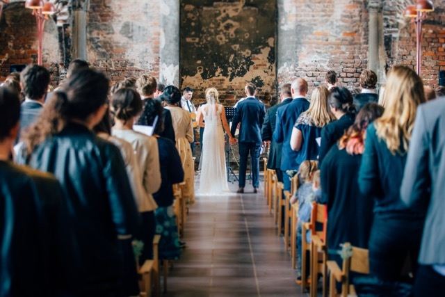
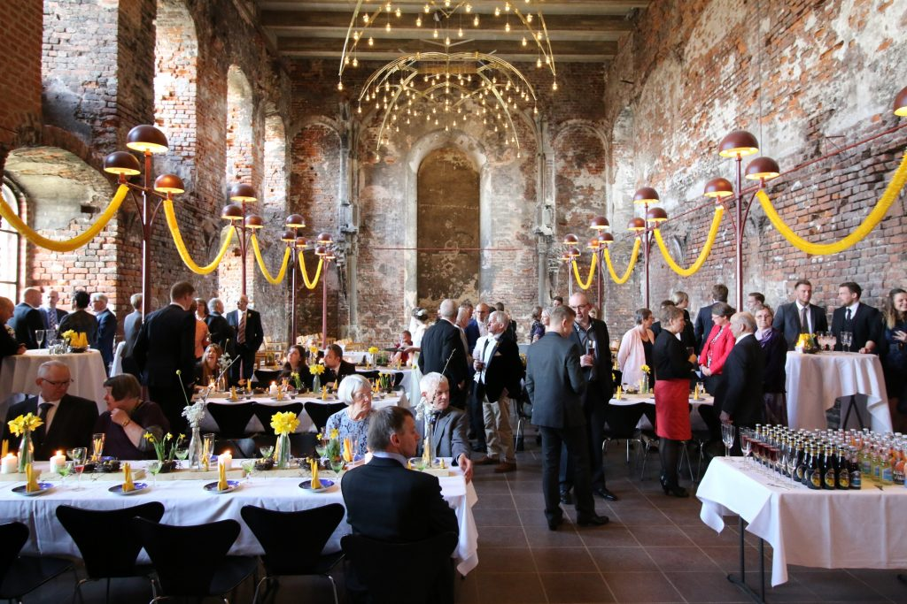

Bliv viet på Koldinghus og lad slottet danne en eventyrlig og stemningsfuld ramme for en af de vigtigste dage i jeres liv.
Efter vielsen er I velkommen til at nyde et glas champagne med jeres gæster, og mens I bliver fotograferet på slottet kan resten af selskabet gå på opdagelse i museets udstillinger.

Om borgerlige vielser
En borgerlig vielse foretages af borgmesteren eller en af de personer, der er bemyndiget som giftefoged. I forbindelse med en borgerlig vielse kontakter man selv borgmesterkontoret.
Om kirkelige vielser
Ønsker man en kirkelig vielse, kontakter man den præst, der skal foretage vielsen. Præsten indhenter herefter en særlig tilladelse hos sognets biskop til at foretage vielsen på Koldinghus.
Praktisk information omkring vielser
Priser
Op til 30 voksne gæster: 4.500 kr.
Op til 60 voksne gæster: 6.500 kr.
Op til 90 voksne gæster: 8.500 kr.

Kapacitet
Det er muligt at være 130 siddende personer i Kirkesalen. I Chr. 3.s kapel er der plads til 70 siddende personer.